Photography / Media Day
Mega Media Day
14 photographs
I had the great privilege to be in charge of the Red-backdrop station during the Mega Media Day Shoot at Camp Randall. I was in charge of taking pictures for a majority of the small sports for two days. It was an awesome experience to work with all of the athletes, even when there were 60 people in a very small area, haha! This gallery features 14 pictures from the shoot, the original shoot features hundreds of photos, so I picked a few to showcase. All of them were edited with a single Badger preset in Adobe Lightroom.
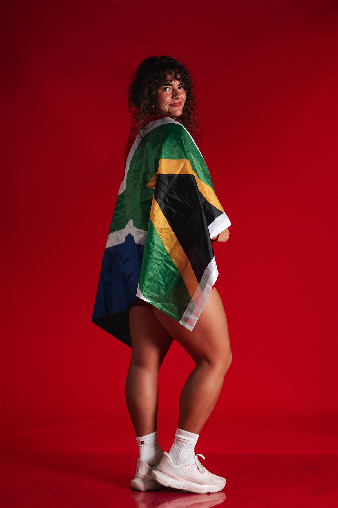
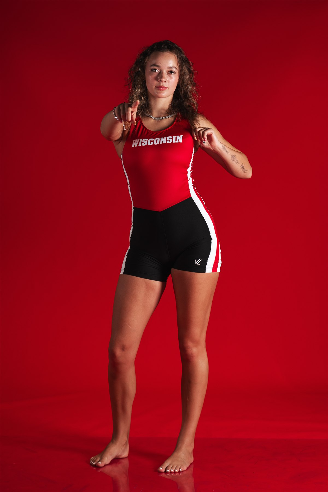
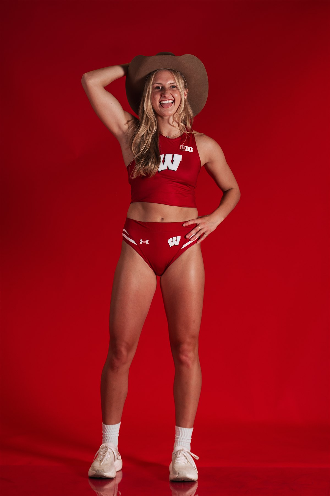

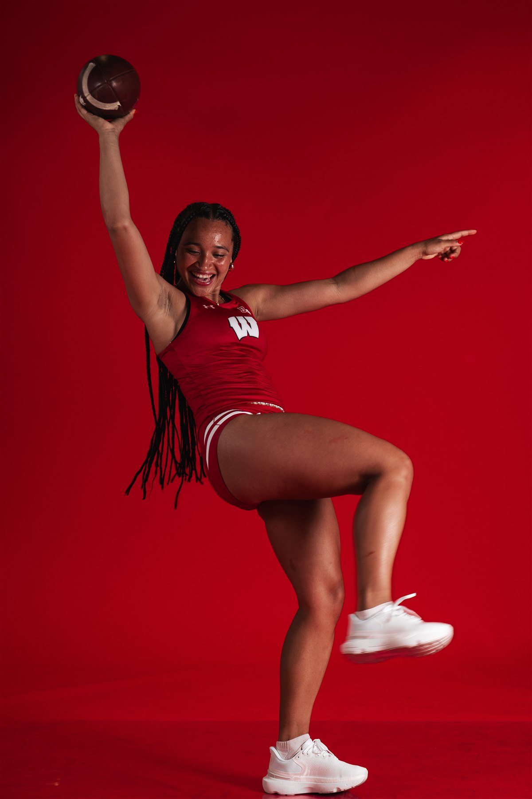
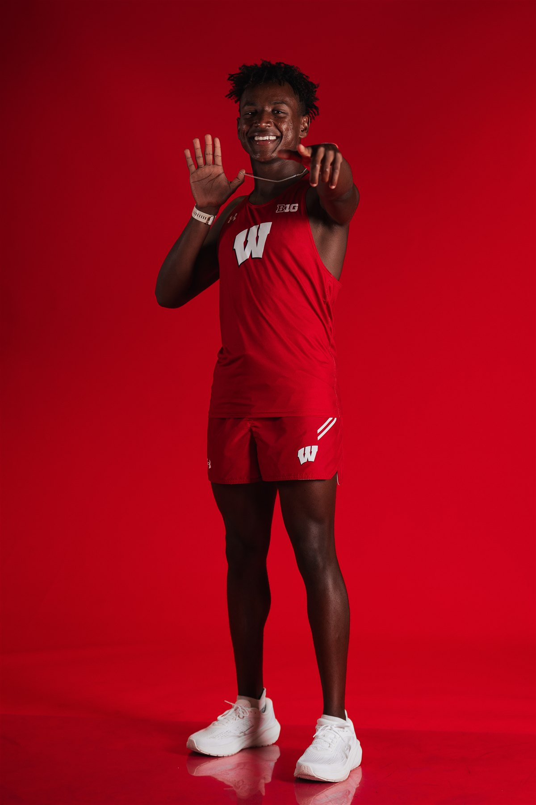
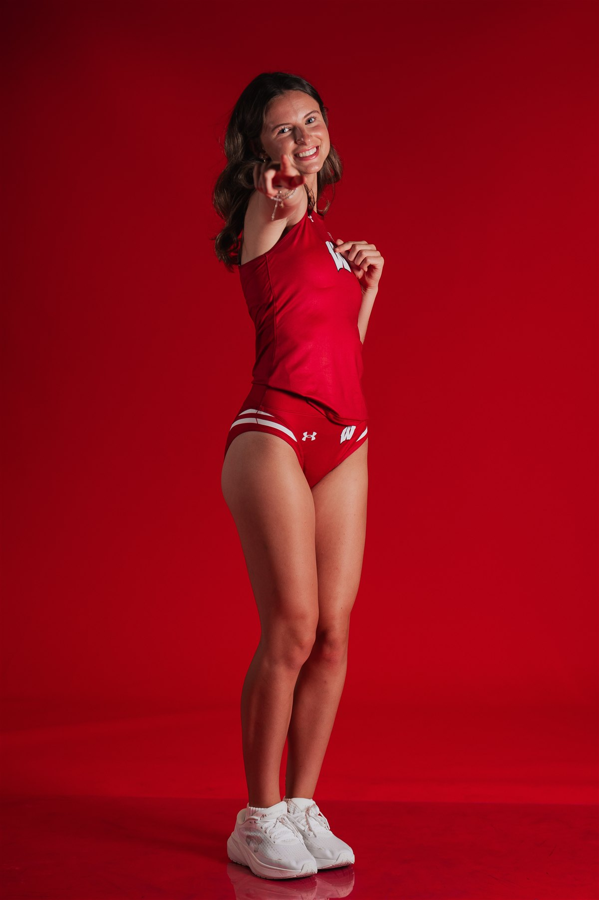
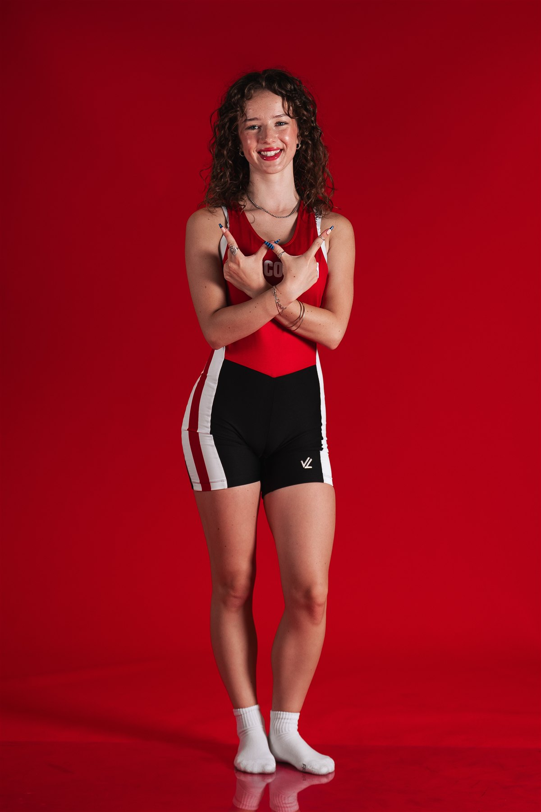
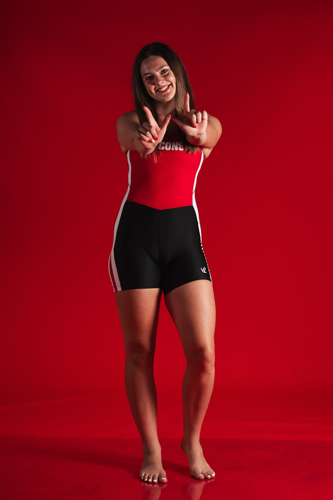
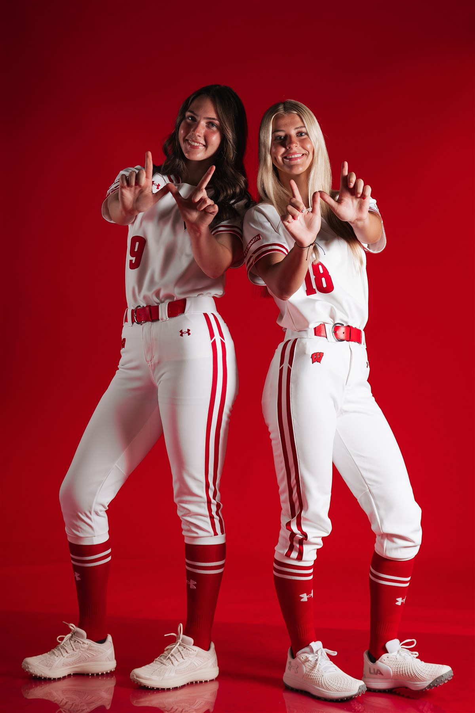
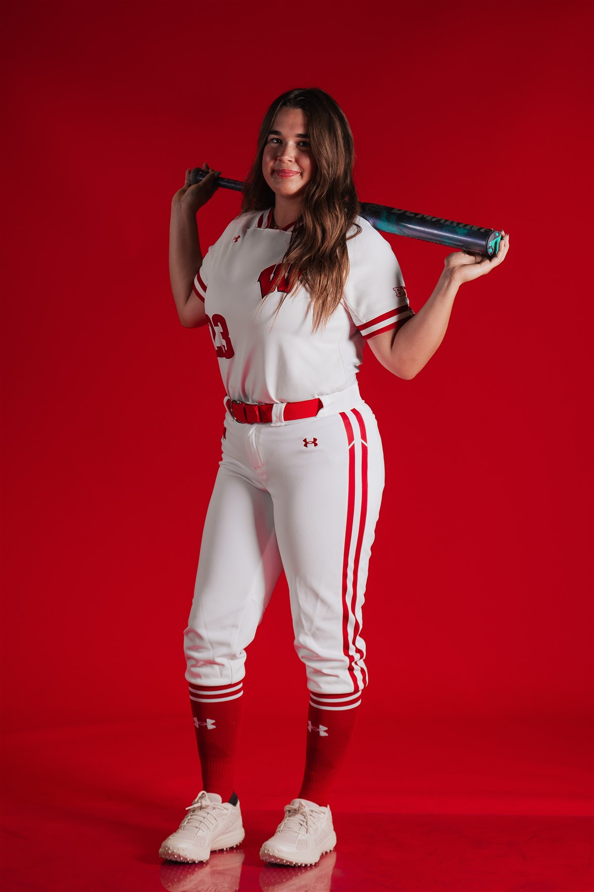
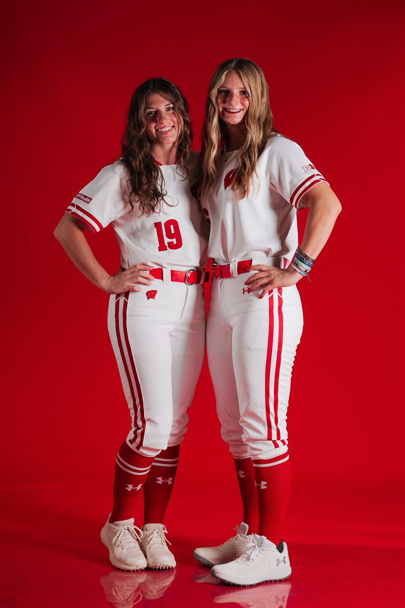
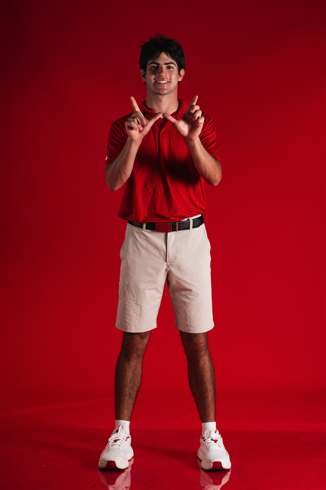
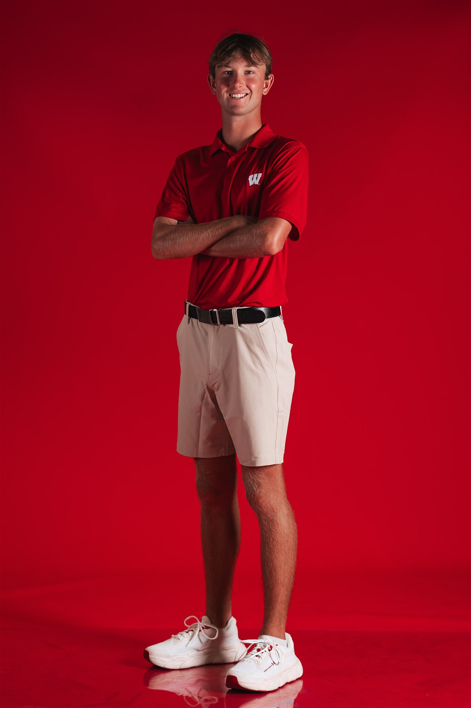